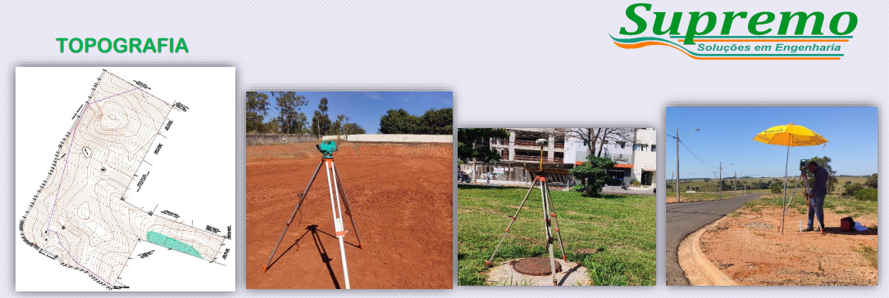
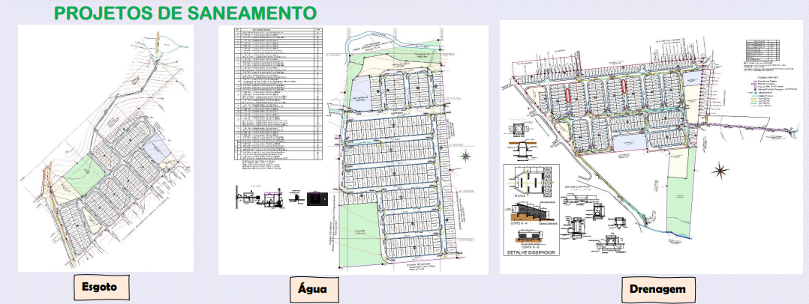
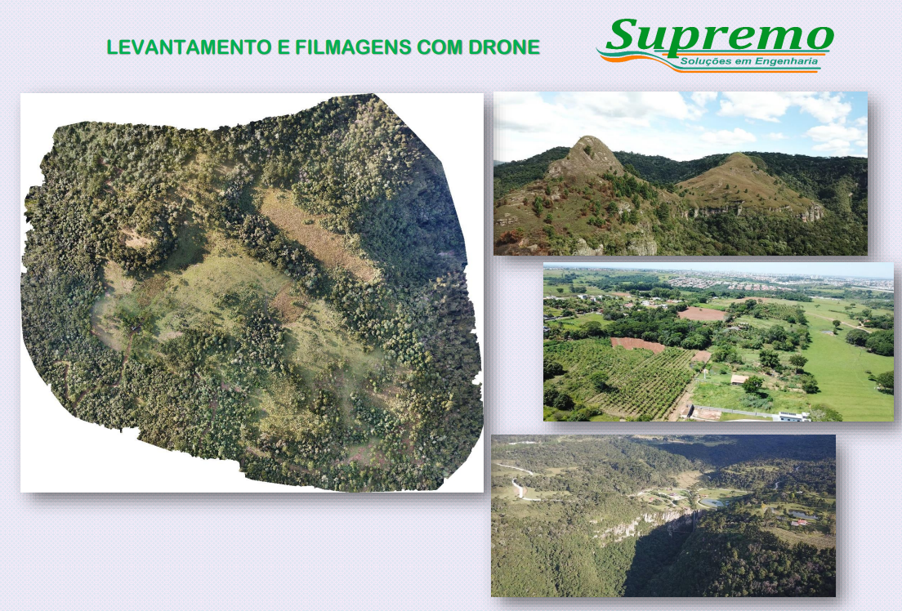
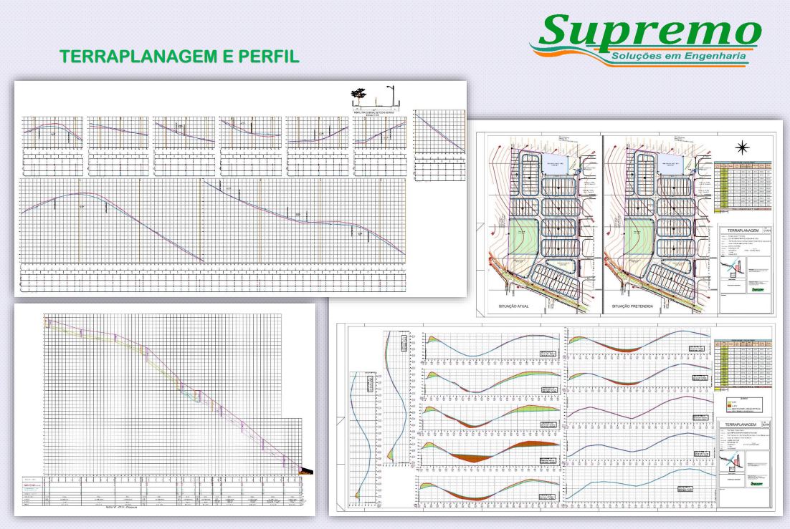
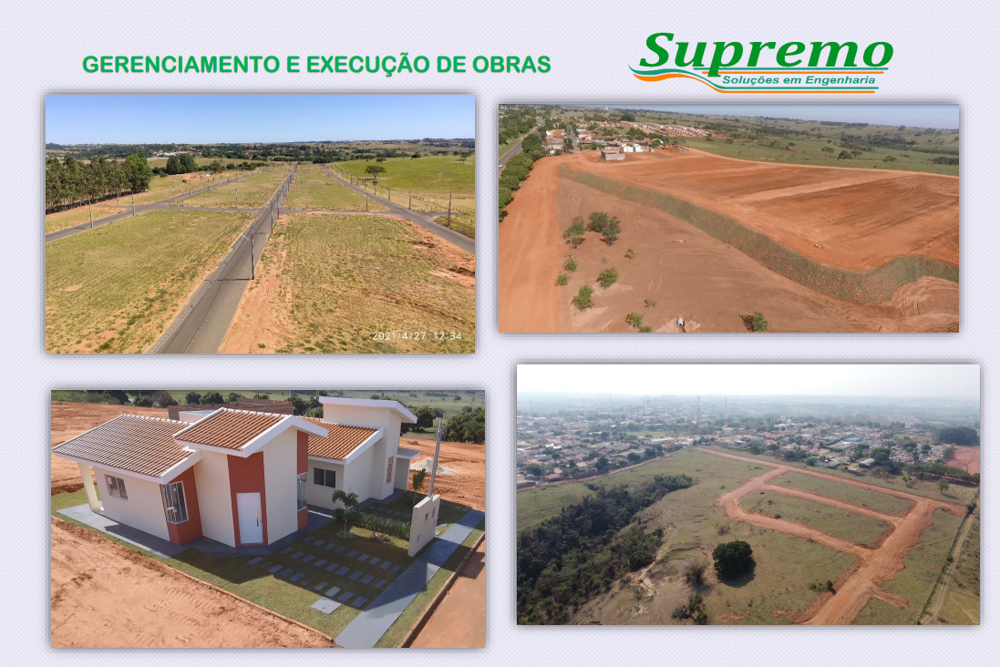

Nossos Serviços

- Serviços de Topografia
- Levantamentos topográficos em geral e locação de obras.

- Projetos de Saneamento
- Elaboração de projetos de abastecimento de água, coleta de esgoto sanitário, E.E.E., e projetos de drenagem de águas pluviais.

- Drone
- Levantamentos e filmagens com Drone.

- Terraplanagem
- Elaboração de projetos de terraplanagem com especificação de corte, aterro e volume.

- Gerenciamento e Acompanhamento de obras
- Gerenciamento de obras de loteamentos e execução de drenagem, terraplanagem, rede de água e rede de esgoto.
- Estudo de tráfego de rodovias
- Elaboração de Estudo de tráfego para aprovação nas concessionárias e ARTESP.